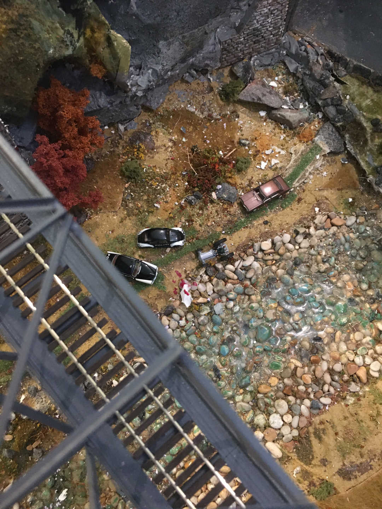
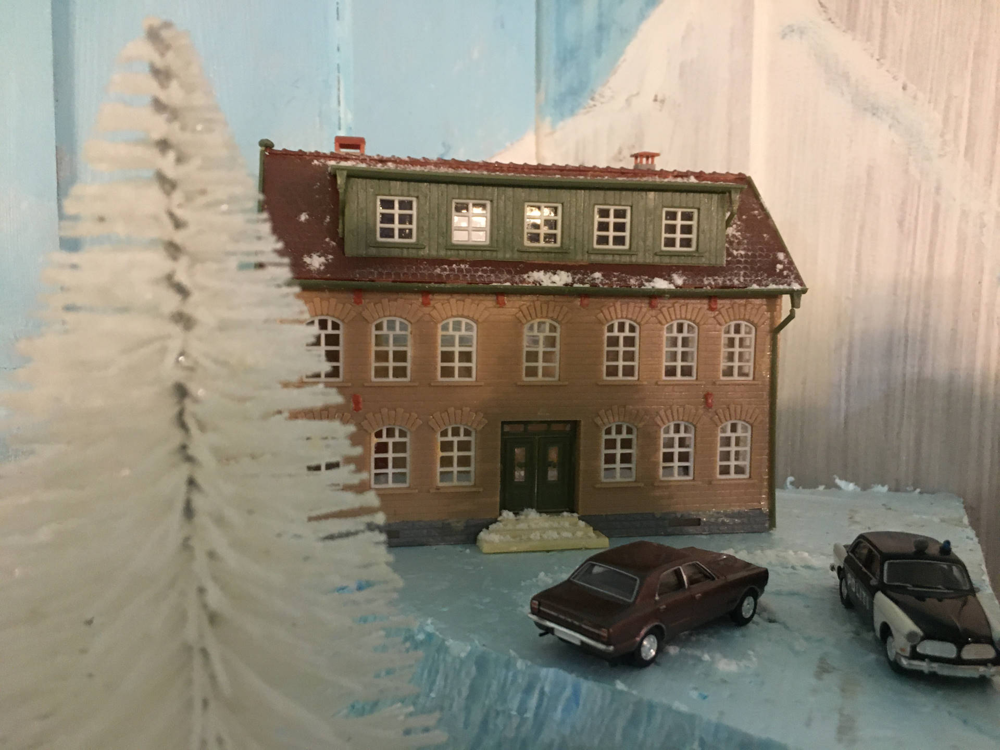
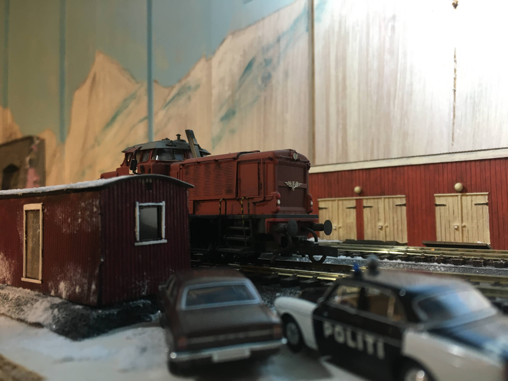

Kapittel 1

Hotelldirektøren hadde problemer, men hvorfor var han funnet død under Djupdalsbrua på Børringfjellinjen
Og langt fra hotellet oppe på fjellet?
- Han må ha hoppa fra nattoget, sa bonden Raudostbråten. - Du veit, de stengte alt på grunn av koronaen.
Men politiinspektør Brohms-Evensen kjente det kom til å bli en lang påske.
Kapittel 2
Politiinspektør Brohms-Evensen måtte tenke fort. Toget med alle passasjerer ble holdt igjen i byen. Mens politiet var på vei til byen sjekket B.E, som han kaltes, togets rute. Det hadde stoppet på Børringfjell stasjon kl 00.10 som vanlig. Flere personer hadde gått på. Togledelsen vurderte at det hadde passert Djupdalsbrua nede i bygda ca kl 0440 som normalt
Etter et par timer var politiet i byen der togpassasjerene ble holdt om bord
Kokken på hotellet hadde hatt sovekupe ved siden av hotelldirektør Borgenhoff. Kokken fortalte at direktøren var alene og hadde lagt seg som normalt og at han ikke hadde hørt noe
Konduktøren fortalte bla at han hadde snakket med snekkeren på hotellet på toget. Snekkeren fortalte at det var fullt kaos på hotellet, det var krangel og at det ble sagt at Borgenhoff var på vei til byen for å «ordne skilsmissen». Konduktøren hadde ikke merket noe unormalt, direktøren reiste alene
Snekkeren var selv forferdet. Han fortalte at det ble snakket om skilsmissen. Alt var kaos. Og direktøren ville jo også rive det ærverdige hotellet som snekkerens far møysommelig hadde tegnet og bygget.
Avhørene ble nå avbrutt av et voldsomt bråk lenger bak i toget, utenfor en av sovevognene. En kvinne hadde forsøkt å forlate toget selv om det var forbudt. Det var fru Åse Borgenhoff.
Kapittel 3
- Jeg er i sjokk, jeg måtte bare av toget da ryktene begynte å gå om at Edvard var død sa Åse Borgenhoff. Hun satt sønderknust inne på stasjonen.
- Dere vet det sikkert, vi hadde en krise og da han dro fra fjellet følte jeg bare for å følge etter. Jeg gikk på lenger bak i toget og hadde vanlig sitteplass. Det var dumt av meg, men jeg ville bare undersøke hva han skulle i byen.
Kvinnen som satt i setet ved siden av henne, var ikke sikker. Hun hadde duppet av og kunne ikke bekrefte at Åse Borgenhoff hadde sitte der hele tiden.
Politiinspektør B.E. hadde ennå ikke fått noen foreløpig obduksjonsrapport. Det var ikke noe annet å gjøre enn å slippe alle passasjerer hvert til sitt.
Dagen etter kommer inspektør B.E. og en patrulje til hotellet på Børringfjell. Med er også hans assistent Harry Kleinstad

Stemningen er anspent. Hotellet hadde hatt koronasmitte. Mange var syke. Og nå var direktøren død - av andre årsaker.
- Dette skal du betale for Borgenhoff, hadde en ropt på allmøtet etter at smitten hadde spredt seg. Det var kokken som ropte, moren hans hadde vært på besøk og blitt smittet. Hun var i risikogruppa. B.E og Kleinstad så på hverandre.
- Men ta en tur bort til Malmberget også, sa resepsjonisten. Vi kaller han bare Moelven

Malmberget besto egentlig bare av en brakke. Og en mann. Gruvene lå lenger inne. Jon Johnsson het han. Men ble kalt Moelven fordi han bodde i en Moelvenbrakke rett ved jernbanelinja. Han jobbet i Bane Polar og jobbet med å håndtere og skifte malmtogene som gikk hver dag. Utsikt bort til hotellet. Og nei: Han hadde ikke sett noe unormalt.
- Hvor var du natt til i går? B.E visste ikke helt hvorfor han stilte spørsmålet så fort.
- Jeg sov jo her og og tok i mot malmtoget som vanlig på morningen, sa Johnsson kontant. - Det kan lokføreren bevitne.